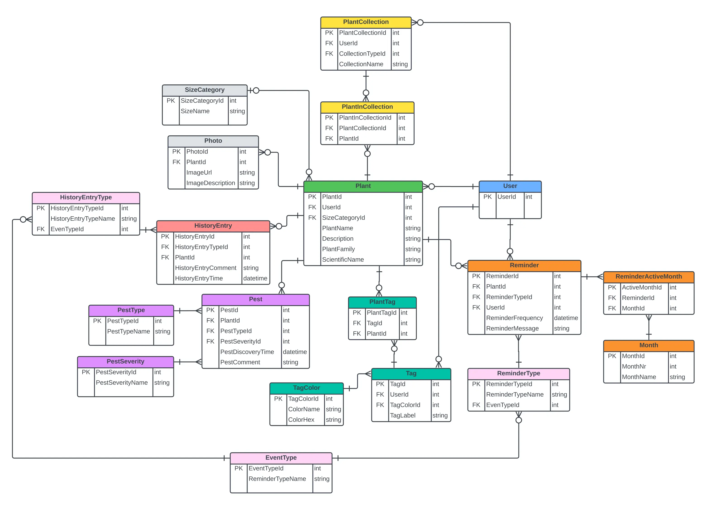
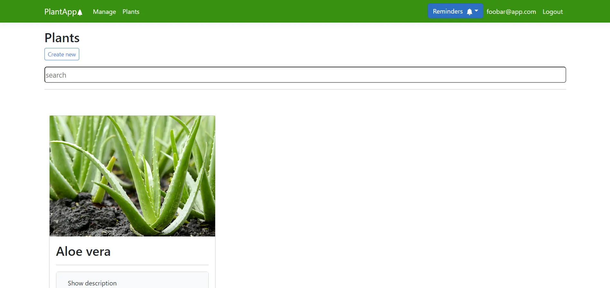
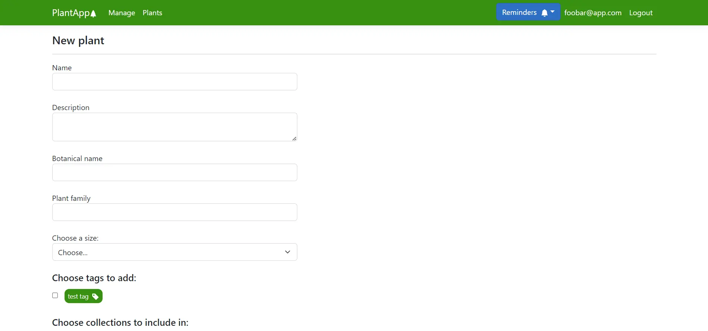
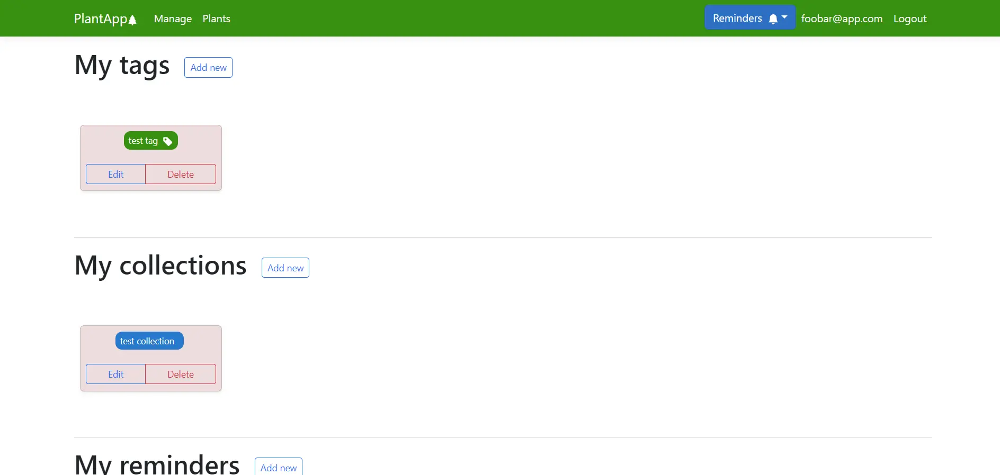

This is a project that I made as part of the 'Distributed Systems' and 'Javascript' courses in Tallinn University of Technology.
The frontend for this project is written in React and the backend is made with .NET, with a PostgreSQL database.
We were given quite a bit of freedom when making this project, each of us was allowed to pick what kind of web app we wanted to make and what sort of features we wanted to implement. For many students, this project became the basis for their final thesis.
I decided to make a webapp for helping with houseplant management. It helps with tasks such as keeping track of the watering cycle, categorizing different plants and marking down any diseases/pests on the plants.
The finalized web app was containerized with Docker and deployed to Microsoft Azure. However, it is no longer live because the project is not being maintained.
   